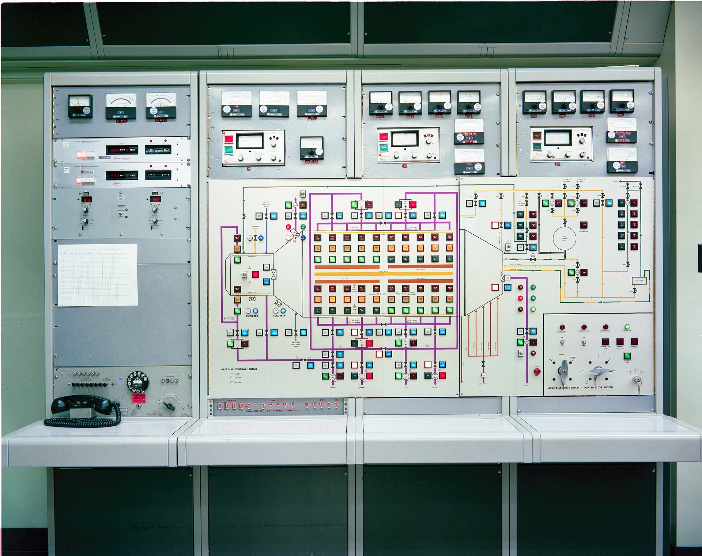
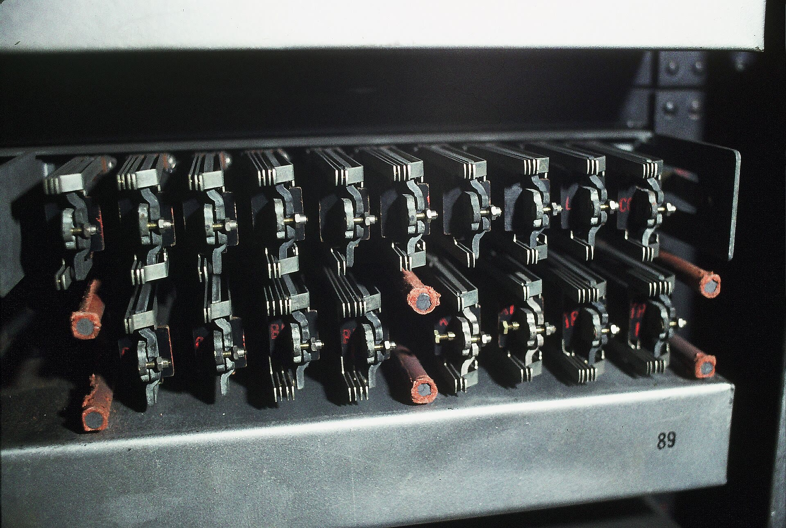

TIA Portal,as plain text.
SCL, LAD and tests as files in VS Code, Zed or Neovim, kept in step with TIA Portal both ways.
$ code --install-extension sa1ntsinner.rung-scl


The whole project, in your editor.


Declarations as a table
A block's interface beside its code, in TIA Portal's sections. Rename, retype and paste rows from Excel; every edit is one text edit you can undo.
Save, and it is in TIA Portal.
Save the file.
rung watch sends the block to TIA Portal the moment you save, as TIA Portal exports it.
TIA Portal compiles it.
About a second later its messages are in your editor. Measured on TIA Portal V20: 0.7 s for a function block, 1.1 s in a project of 624 objects.
Change it in TIA Portal, and it comes back.
An edit made in TIA Portal is written into the file. When both sides changed, SCL merges by line and LAD by network.
Test without a PLC.
YAML tests run on rung's simulator: in VS Code, in Linux CI and here in your browser. Break the latch and see what the simulator says.
The same simulator ran 26 cases cycle by cycle against PLCSIM Advanced. The numbers
Fx_Motor.scl
#Running :=
(#Start OR #Running)
AND NOT #Stop;tests/Fx_Motor.test.yaml
block: Fx_Motor
cases:
- name: stays latched
steps:
- set: { Start: true }
cycle: 1
- set: { Start: false }
cycle: 1
expect: { Running: true }Enable JavaScript to try this test.
The project and the PLC.
Project
Program blocks, data types and tag tables, grouped as TIA Portal groups them.
rung watch
Sends what you save and brings back what changed in TIA Portal.
Writes to TIA Portal
Off until you turn them on. A preview shows every line first.
RUNG
Project
PLC_1 16
Program blocks 10
Station 7
FC_Scale
Main
Station_DB
PLC data types 2
UDT_BatchCmd
UDT_Recipe
PLC tags 2
PLC
rung watch watching
Writes to TIA Portal on
PLC_1 RUN · cycle 3 ms
Go online
Compile PLC
Compare with PLC
Download…
PLC state
RUN or STOP and the cycle time, read over S7CommPlus.
Compare with PLC
Is the PLC running what the project has? A comparison that only reads.
Download
Started by a person, the PLC's name typed to confirm. Agents never download.
Online with a real S7-1500.
Values next to every line, TIA watch tables live, alarms and the diagnostic buffer, over S7CommPlus with the PLC's certificate pinned. Program status is reconstructed by the simulator, and labelled so.
For a machine you must not change, one setting makes rung read only: RUNG_READ_ONLY=1 blocks every change to the PLC and to the project.
1501
values, as on an S7-1500.
rung's simulator and PLCSIM Advanced V7.0 ran the same 26 test cases cycle by cycle, on twelve blocks as TIA Portal V20 compiled them. Every output after every step was compared. Evidence

A PLC program is a program.
It runs a machine for twenty years, and for most of them it has lived inside one tool. In text it gets what other code has: git history and branches, review line by line, tests in CI, the editor you already use, and agents that can read it.
TIA Portal stays where it is strong: hardware, download, the online view. rung leaves those to it and does the rest in text.
S7CommPlus over TLS
Live values, watch tables, CPU state, alarms and the diagnostic buffer, for S7-1500 firmware 2.9 and later.
Trace
rung trace record samples signals; TIA Portal's trace CSV imports. VS Code plots both.
Backup of a running PLC
Everything rung can read, in one folder with SHA-256 sums. The PLC is only read.
A read-only lock
Per PLC or for the whole machine: no change to the PLC or the project gets through.
TIA Portal without a window
One TIA Portal in the background serves the project's commands and editors.
Open TIA Project…
Mirrors the project and starts watch, on this PC or another Windows PC over ssh.
Open in TIA Portal
Moves the project into a window when you need the hardware view.
Git branches
Switching a branch with 57 changed files is in TIA Portal about 40 s later.
Debug a test
Breakpoints in SCL, step into calls, step back, set values while stopped.
Why?
The statement that last wrote a value, its operands, and the branch that made it run.
Coverage
Which SCL lines the tests reached, in the editor and as lcov for CI.
Tests against a revision
rung test --against shows every case that behaves differently now.
LAD as a ladder
In the editor's theme, with power flow and live values on the contacts.
Tables
Declarations, data types, tag tables and tests, edited in place.
Format as TIA Portal does
So a sync and a pull bring the file back unchanged.
TIA Portal V19, V20, V21
The version is read from the project file.
Works where you write.
VS Code
Tables, the ladder view, the debugger, the test explorer.
Zed
The language server, tasks and the debugger.
Neovim
rung.nvim with neotest and nvim-dap.
Claude Code
rung's MCP server and PLC skills.
Codex
The same MCP tools, set up in one command.
Cursor
Agents read and test; they never turn writes on.
GitHub Copilot
MCP tools in VS Code's agent mode.
Gemini CLI
And OpenCode, through the same server.
Linux CI
Tests and format checks without TIA Portal.
TIA Portal
V19, V20 and V21 on Windows.
Free core, Pro for teams.
The core is free for individuals, education, non-commercial open source and organisations with up to three rung users, under BUSL-1.1. Sync, SCL, tests and the MCP server are all in it.

€49per user, month
- A commercial licence
- Change review and a CI gate
- FAT and SAT records
- Support